Aviationology
Aviationology
Home |
About |
Airbus |
Bombardier |
Boeing |
Cessna |
Videos |
Facts |
Welcome to the Boeing Page! The Boeing Company (/ˈboʊɪŋ/) is an American multinational corporation that designs, manufactures, and sells airplanes, rotorcraft, rockets, satellites, telecommunications equipment, and missiles worldwide. The company also provides leasing and product support services. Boeing is among the largest global aerospace manufacturers; it is the second-largest defense contractor in the world based on 2018 revenue,[7] and is the largest exporter in the United States by dollar value.[8] Boeing stock is included in the Dow Jones Industrial Average. Boeing is incorporated in Delaware.[9] Boeing was founded by William Boeing in Seattle, Washington on July 15, 1916.[10] The present corporation is the result of the merger of Boeing with McDonnell Douglas on August 1, 1997. Then chairman and CEO of Boeing, Philip M. Condit, assumed those roles in the combined company, while Harry Stonecipher, former CEO of McDonnell Douglas, became president and COO.[10]
The Boeing Company was started in 1916, when American lumber industrialist William E. Boeing founded Aero Products Company in Seattle, Washington. Shortly before doing so, he and Conrad Westervelt created the "B&W" seaplane.[14][15] In 1917, the organization was renamed Boeing Airplane Company, with William Boeing forming Boeing Airplane & Transport Corporation in 1928.[14] In 1929, the company was renamed United Aircraft and Transport Corporation, followed by the acquisition of several aircraft makers such as Avion, Chance Vought, Sikorsky Aviation, Stearman Aircraft, Pratt & Whitney, and Hamilton Metalplane.[2] In 1931, the group merged its four smaller airlines into United Airlines. In 1934, the manufacture of aircraft was required to be separate from air transportation.[16] Therefore, Boeing Airplane Company became one of three major groups to arise from dissolution of United Aircraft and Transport; the other two entities were United Aircraft (later United Technologies) and United Airlines.[2][16]
The Boeing 737 is a narrow-body aircraft produced by Boeing at its Renton Factory in Washington. Developed to supplement the Boeing 727 on short and thin routes, the twinjet retains the 707 fuselage cross-section and nose with two underwing turbofans. Envisioned in 1964, the initial 737-100 made its first flight in April 1967 and entered service in February 1968 with Lufthansa. The lengthened 737-200 entered service in April 1968. It evolved through four generations, offering several variants for 85 to 215 passengers.
| 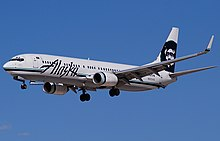737 Taking-Off | 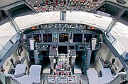Cockpit | 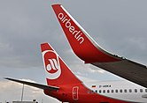Winglet |
The Boeing 747 is a large, long–range wide-body airliner and cargo aircraft manufactured by Boeing Commercial Airplanes in the United States. After introducing the 707 in October 1958, Pan Am wanted a jet 2 1⁄2 times its size, to reduce its seat cost by 30% to democratize air travel.[7] In 1965, Joe Sutter left the 737 development program to design the 747, the first twin aisle airliner. In April 1966, Pan Am ordered 25 Boeing 747-100 aircraft and in late 1966, Pratt & Whitney agreed to develop its JT9D, a high-bypass turbofan. On September 30, 1968, the first 747 was rolled out of the custom-built Everett Plant, the largest building in the world by volume. The first flight took place on February 9, 1969 and the 747 was certified in December of that year. It entered service with Pan Am on January 22, 1970; it was the first airplane dubbed a "Jumbo Jet".
The Boeing 757 is an American narrow-body airliner that was designed and built by Boeing Commercial Airplanes. The then-named 7N7, a twinjet successor for the 727 (a trijet), received its first orders in August 1978. The prototype completed its maiden flight on February 19, 1982 and it was FAA certified on December 21, 1982. Eastern Air Lines placed the original 757-200 in commercial service on January 1, 1983. A package freighter (PF) variant entered service in September 1987 and a combi model in September 1988. The stretched 757-300 was launched in September 1996 and began service in March 1999. After 1,050 had been built for 54 customers, production ended in October 2004, while Boeing offered the largest 737 NG variants as a successor.
The Boeing 777, commonly referred to as the Triple Seven, is an American wide-body airliner developed and manufactured by Boeing Commercial Airplanes. It is the world's largest twinjet.[4][5] The 777 was designed to bridge the gap between Boeing's 767 and 747, and to replace older DC-10s and L-1011s. Developed in consultation with eight major airlines, with a first meeting in January 1990, the program was launched on October 14, 1990 with an order from United Airlines. The prototype was rolled out on April 9, 1994, and first flew on June 12, 1994. The 777 entered service with the launch customer, United Airlines, on June 7, 1995. Longer range var
The Boeing 787 Dreamliner is an American wide-body jet airliner manufactured by Boeing Commercial Airplanes. After dropping its Sonic Cruiser project, Boeing announced the conventional 7E7 on January 29, 2003, focused on efficiency. The program was launched on April 26, 2004, with an order for 50 from All Nippon Airways (ANA), targeting a 2008 introduction. On July 8, 2007, the prototype was rolled out without major systems, and experienced multiple delays until its maiden flight on December 15, 2009. Type certification was received in August 2011 and the first 787-8 was delivered in September 2011 before entering commercial service on October 26, 2011, with ANA.
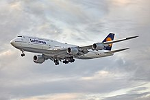747-8 Taking-Off
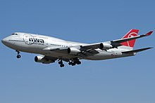747-400 Taking-Off
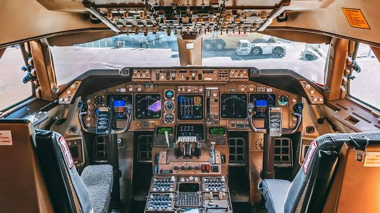Cockpit
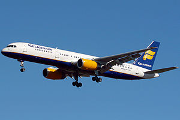757 Taking-Off
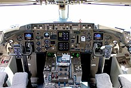cockpit
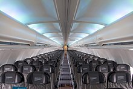Cabin
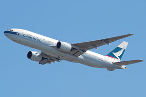777 Taking-Off
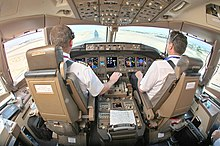cockpit
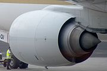Rolce-Royce Engine
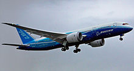787 Taking-Off
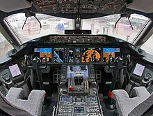cockpit
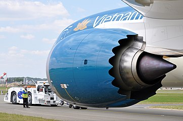Engine